All 28 wireframes & 5 flows · 2026-05-23 · rendered in proto mode, compared against the UX spec + Lazyweb references
TL;DR. The system is strong and coherent — utility-dense, dark, mono-numerals, two-color brand discipline, clear set-row state machine. It already reads better than most apps in the reference set. The work left is not structural; it's three buckets:
⋯, group ⋮) render as blank white squares; icon lock is blocking the highest-traffic screen.No redesign needed — a polish + reconciliation pass.
X1 · Icon placeholders render as blank squares ⭐ — on in-workout the top-bar close & ⋯ and the group ⋮ render as solid white squares. These are the most-tapped controls in the app. Profile/Builder icons render fine, so it's the unresolved in-workout icon set. Lock the library (Lucide/Phosphor, visual §6) and wire close, more-horizontal, more-vertical, note.
X2 · Ambiguous meta token · 4 · — the unlabeled exercise count sits between 12 sets and 540 kg on Today, every History row, and the in-workout top bar. Label it (4 ex) or drop it.
X3 · Volume thousands separator — 4 540 kg reads as two numbers next to the · meta rhythm. Pick 4,540 / 4540 / 4.5k. Also an i18n call (UA uses space grouping).
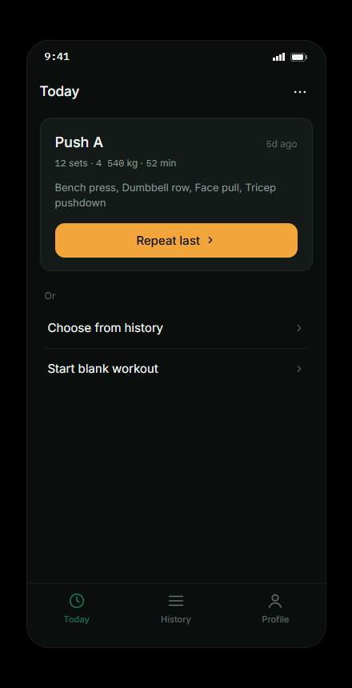
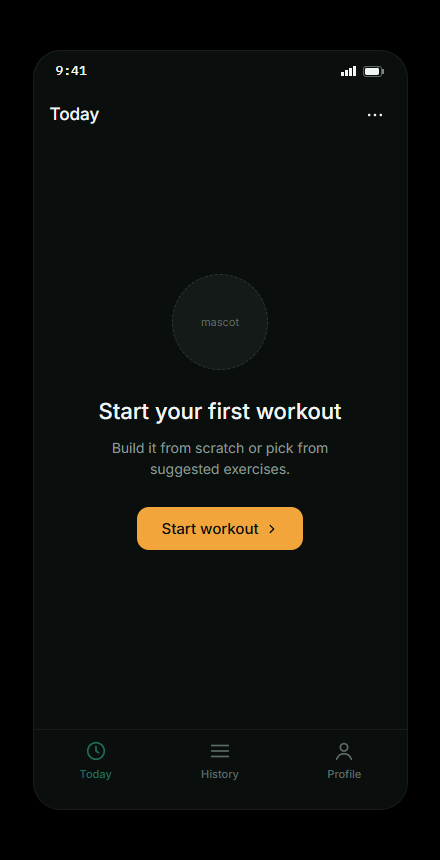
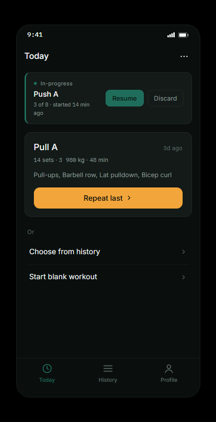
Working: clean three-state model; single confident amber CTA with demoted text-link alternates — the 90%-case optimization the spec argues for.
F1.1 · In-progress CTAs aren't disabled — spec §3.1.c requires Repeat/Choose/Start dimmed while the banner shows (only Resume/Discard live). Mockup shows them bright. Mockup gap vs a locked decision.
F1.2 · Orphan "Or" label — weak connector; use a thin "— or —" divider or drop it.
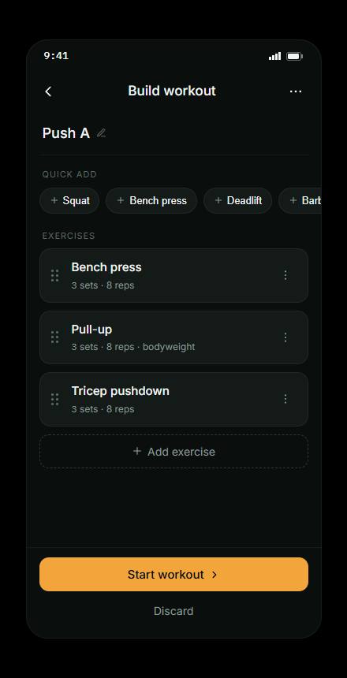
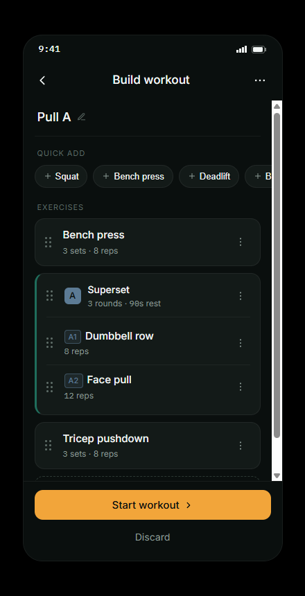
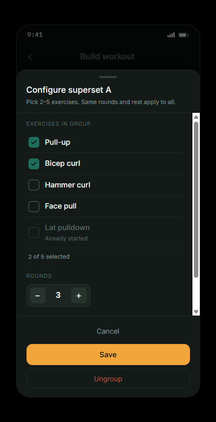
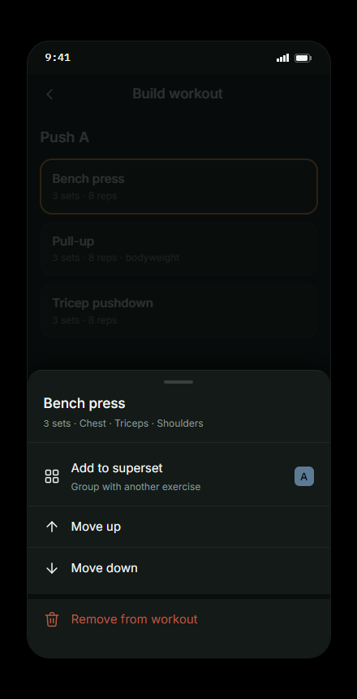
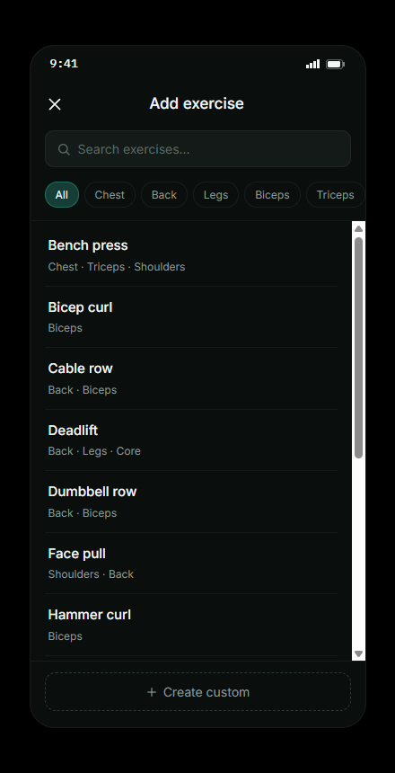
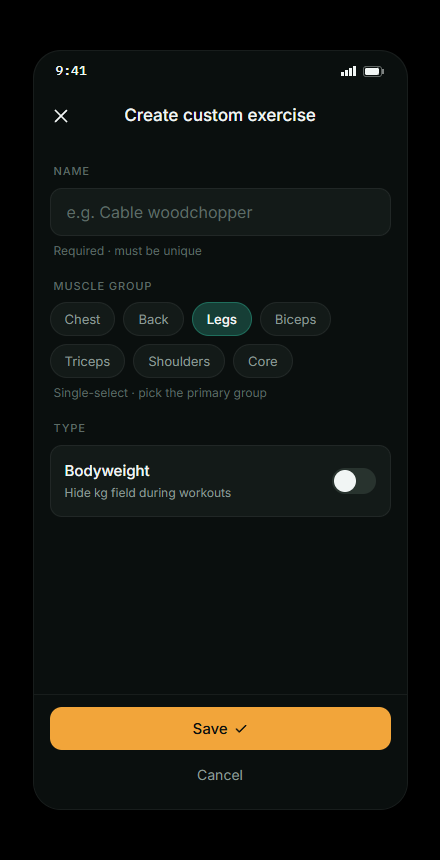
Working: drag-handle (left) + ⋮ (right) cleanly split; Quick-add chips peek the next chip; superset card reads instantly (mallard border + letter chip + A1/A2). Picker + create have helpful inline helper text.
F2.1 · Row menu missing Edit sets + Add note — spec §4.4 lists both. Without them there's no pre-workout way to change the default 3×8 or set targets — user must start the workout to edit. Functional gap.
F2.2 · Superset sheet isn't mode-aware — shows Cancel · Save · Ungroup together. Ungroup only applies in edit mode. Create → Cancel / Create group; edit → Cancel / Save + Ungroup. (Spec §6.2 calls it "Create group", not "Save".)
F2.3 · Rest is below the fold in the config sheet — the combined sheet's point is partner + rounds + rest in one glance. Compress the exercise list so Rounds + Rest + Create sit above the fold. see Ladder ref
F2.4 · Discard sits under the primary CTA — destructive verb under the thumb's primary target. Add separation.
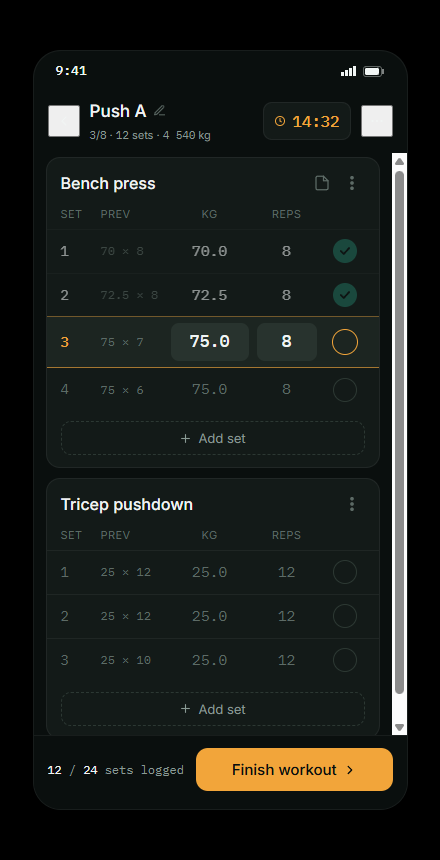
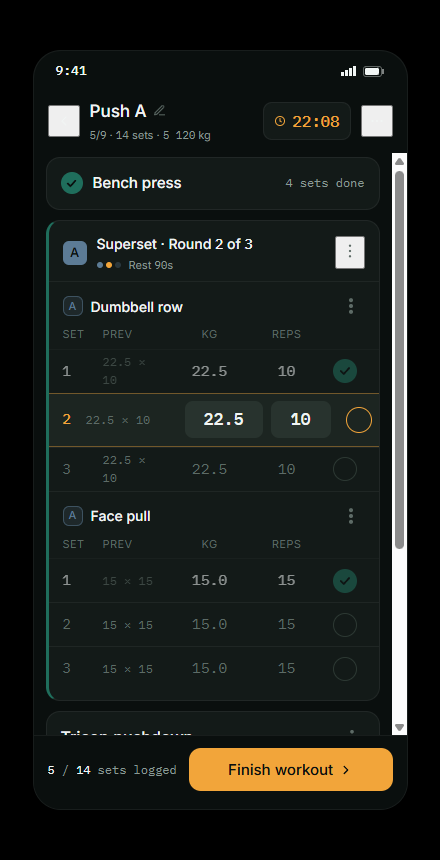
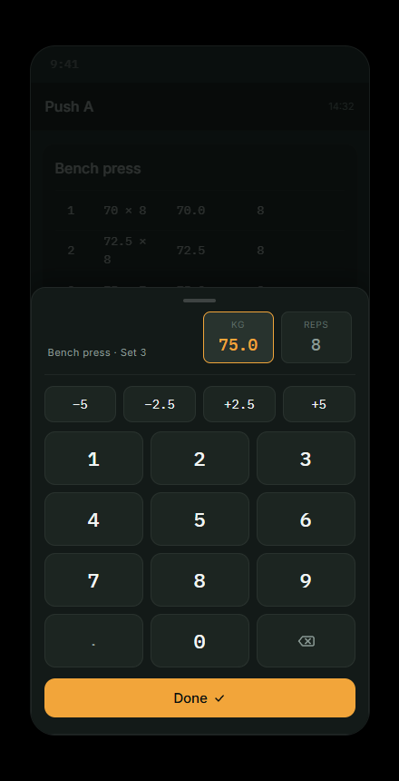
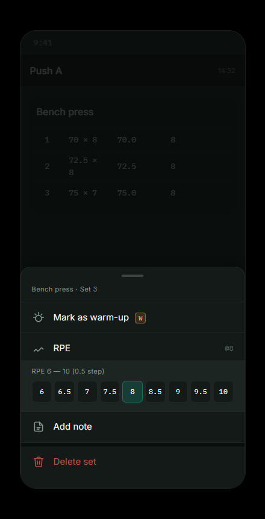
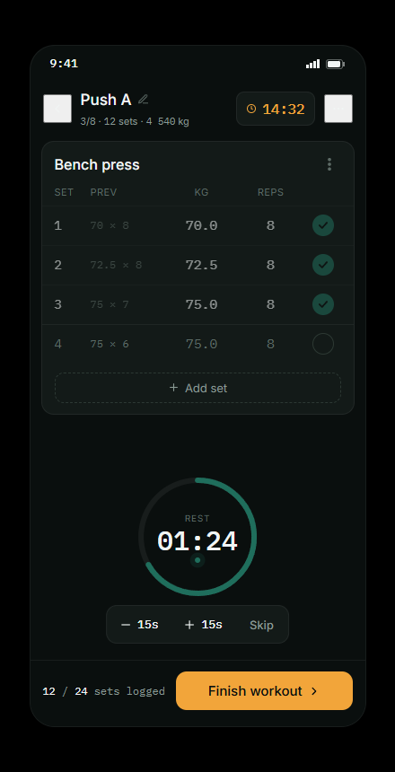
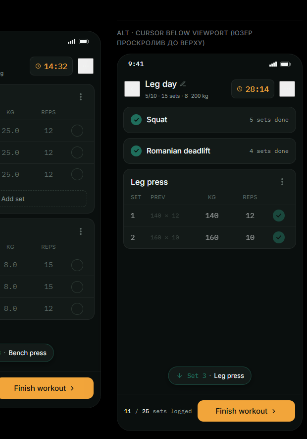
Working — the strongest part of the app. Set table is dense but legible; active = amber tile + bold mono, done = muted + mallard check, collapsed completed exercise saves space. The custom numpad beats the references (gym quick-adjust −5/−2.5/+2.5/+5, dual fields, big keys). Inline RPE picker is well-judged. Superset in-workout density is impressive without chaos.
F3.1 · Rest-timer ring vs pull-to-cursor chip compete for the bottom zone — INDEX flags the 92px collision. Decide: prominent ring (glanceable, but ~180px) or spec's compact bottom-bar countdown (§5.1/§6.6). If ring stays, it can't share a layer with the chip — define stacking.
F3.2 · Numpad "Done" → "Save set" — names the consequence (logs set, advances cursor, starts rest). §7.2.
F3.3 · Failed-reps (0) & warmup row treatment still TBD — visual §5.1. Mock the row-level feedback for a logged failed set (§5.7).
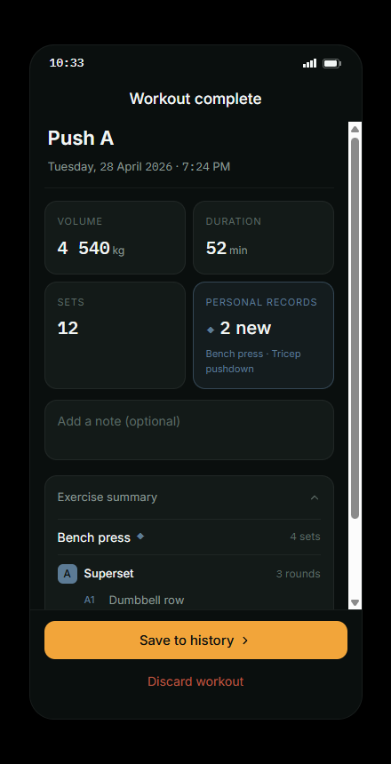
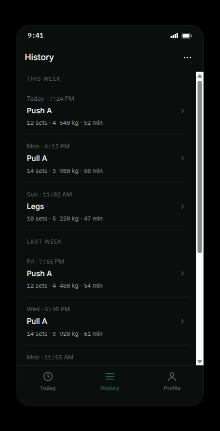
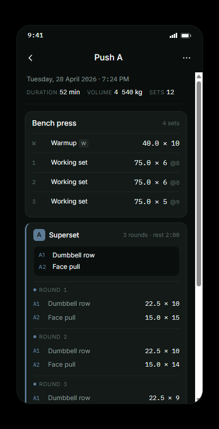
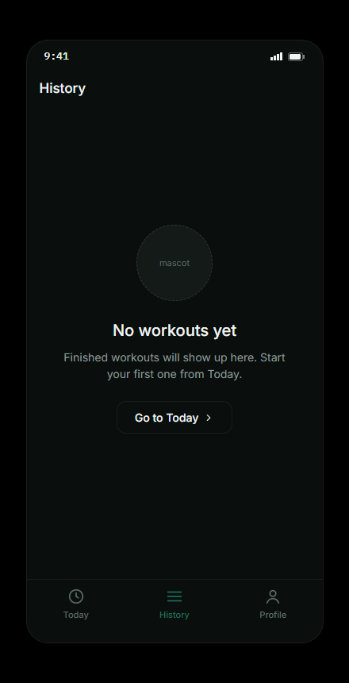
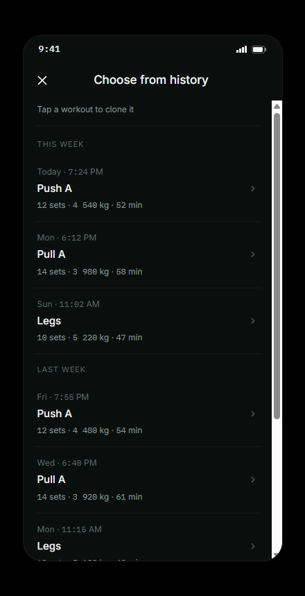
Working: Completion nails it — 4 stat cards with the PR card as the single info-tinted accent (restraint most apps fail). History detail's read-only per-round superset breakdown is genuinely good information design. Sticky week/month headers + two-line rows scan well.
F4.1 · History has top-bar ⋯ menus; spec says it shouldn't — §10.1–10.3 say no topbar actions / read-only. Either the decision changed (update spec + define the menu) or drop the ⋯.
F4.2 · history-empty has a "Go to Today" CTA; spec says none (§10.4). Arguably helpful — make it a decision, not a silent override.
F4.4 · Completion note placement — sits between stats and summary; notes are usually written last, so consider moving it below the summary. Low priority.
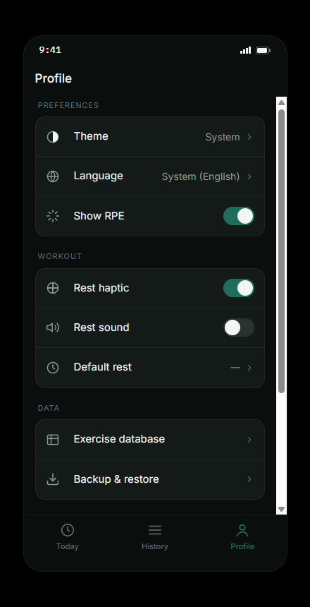
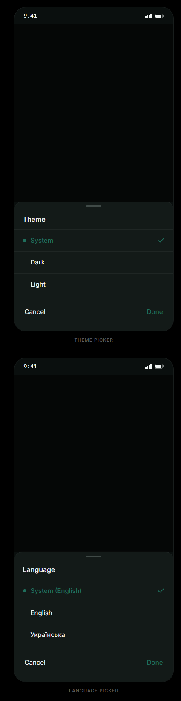
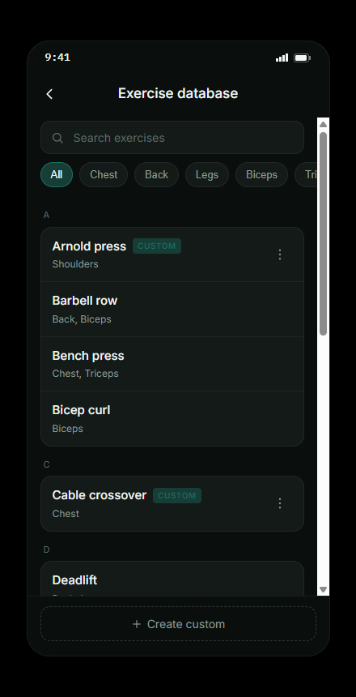
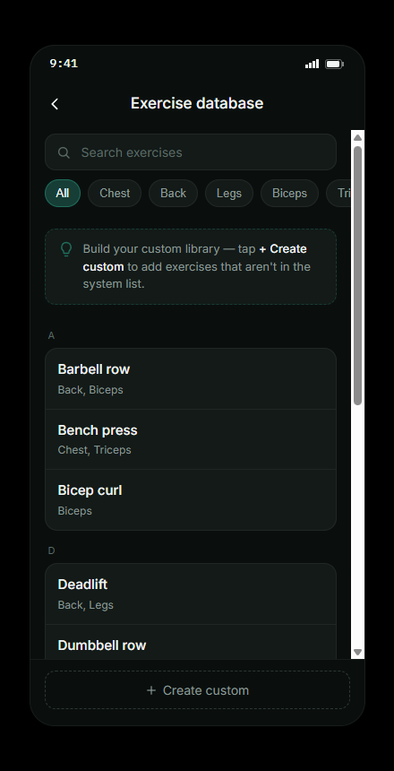
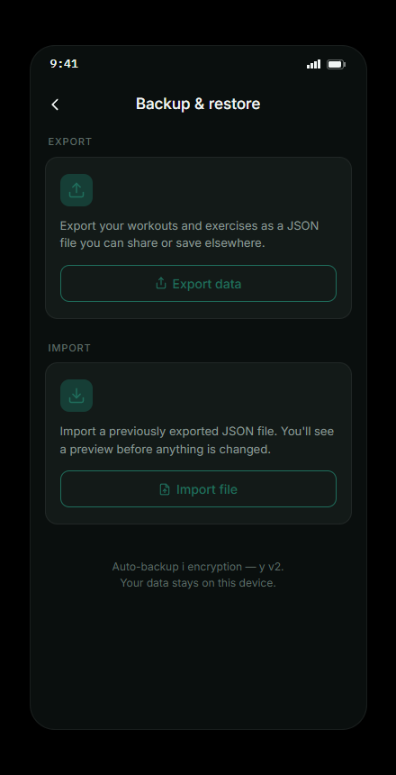
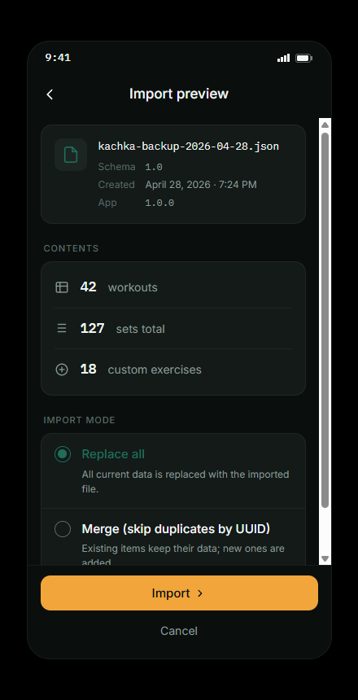
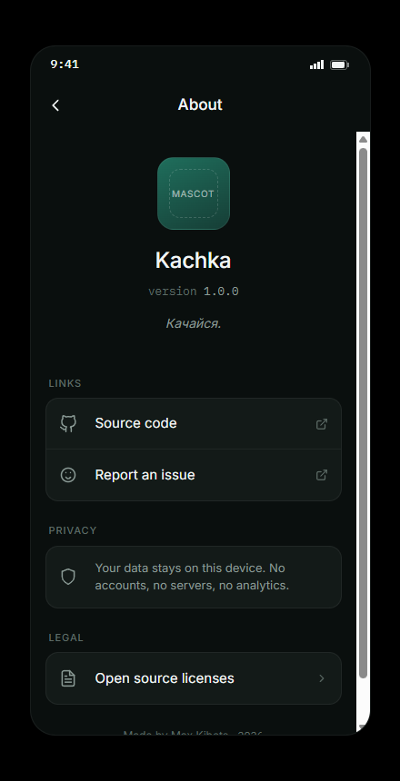
Working: tidy iOS-style grouped hub; DB browse matches the §11.5 resolution (CUSTOM badge + custom-only ⋮); db-empty's "build your custom library" nudge over the always-present system list is a smart read of "empty = no custom"; import preview is thorough.
F5.1 · Backup copy is broken (UA/EN mix) ⭐ — footer reads "Auto-backup i encryption — y v2." (i=і, y=у leaking in). Should be "Auto-backup and encryption — in v2." Repo rule: base UI copy is English. Clear bug.
F5.2 · Settings: instant-apply vs Cancel/Done conflict — §12.2 says Theme/Language apply instantly, but the sheets have a Cancel/Done footer (implies a commit step). Pick one. Also the selected row is double-encoded (mallard dot + checkmark) — one marker is enough.
F5.3 · Default rest row not in spec (§12.3 lists only Rest haptic + Rest sound). It's genuinely useful — likely "add to spec" rather than cut. Decide.
F5.4 · About scope creep — Report an issue + Open source licenses appear though §12.5 defers acknowledgements; Качайся. tagline is UA-only (needs EN variant or accept as brand-ism). Reconcile with v1 scope.
F5.5 · Import preview dropped the "Settings" line — spec §13.3 lists it; keep it so users know settings get replaced/merged. Minor.
| # | Fix | Type | Priority |
|---|---|---|---|
| X1 | Lock icons; in-workout close/⋯/⋮ render as squares | Visual defect | P0 |
| F5.1 | Fix "Auto-backup i encryption — y v2" → English | Copy bug | P0 |
| F2.1 | Add Edit sets + Add note to builder row menu | Functional gap | P1 |
| F1.1 | Disable Today CTAs while in-progress banner shows | Spec gap | P1 |
| F3.1 | Resolve rest-timer ring vs pull-to-cursor layout | Interaction | P1 |
| F2.2 | Make superset sheet mode-aware (Create vs Save+Ungroup) | Spec/logic | P1 |
| F5.2 | Settings: instant-apply OR Cancel/Done; single select marker | Spec/logic | P1 |
| X2 | Label/drop bare exercise-count · 4 · | Consistency | P2 |
| X3 | Disambiguate volume thousands separator | Consistency/i18n | P2 |
| F4.1 | Drop History ⋯ menus (or update spec + define) | Spec divergence | P2 |
| F4.2 | Decide History-empty CTA | Spec divergence | P2 |
| F5.3 | Decide Default rest (add to spec or cut) | Spec divergence | P2 |
| F3.2 | Numpad "Done" → "Save set" | Copy | P3 |
| F2.3 | Surface Rest above fold in superset sheet | Polish | P3 |
| F5.4 | Reconcile About with v1 scope | Scope | P3 |
| F3.3 | Mock failed-reps (0) + warmup row treatment | Visual TBD | P3 |
| F2.4 | Separate Builder Discard from primary CTA | Polish | P3 |
| F1.2 / F4.4 / F5.5 | "Or" connector · completion note order · import "Settings" line | Polish | P3 |
Match quality from Lazyweb was moderate — a data-dense, no-account, single-purpose logger is a narrow niche, and the spec deliberately avoids cloning Hevy/Strong/Fitbod. Treat these as inspiration, not templates.
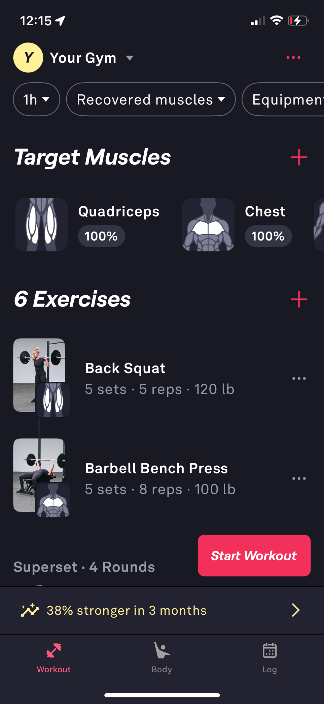
Edit sets to Kachka's row menu (F2.1).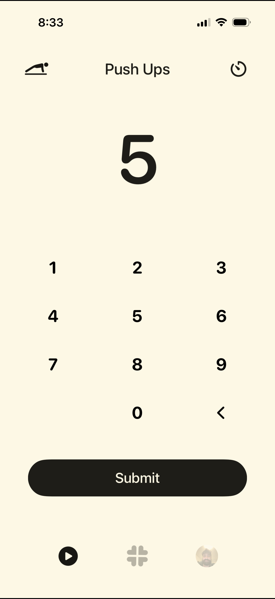
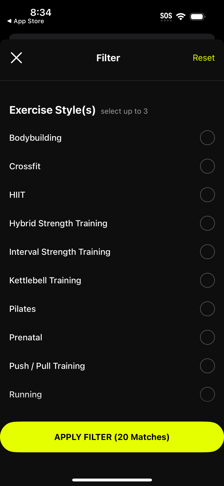
All 27 rendered screens live in references/current-*.png (proto mode, clean phone frame).